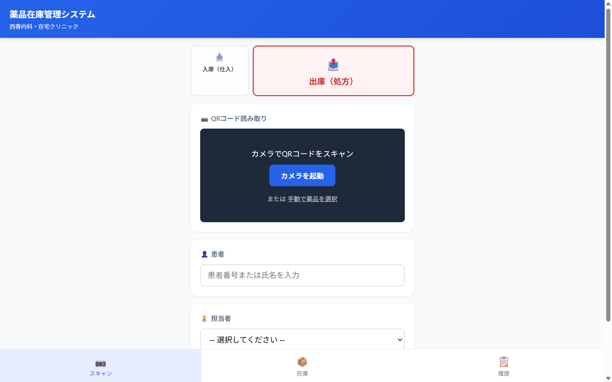
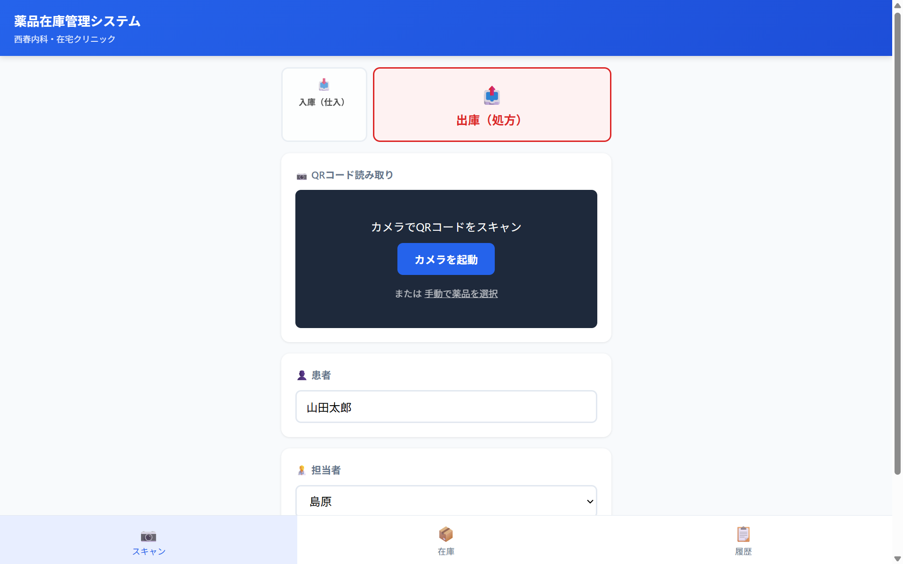
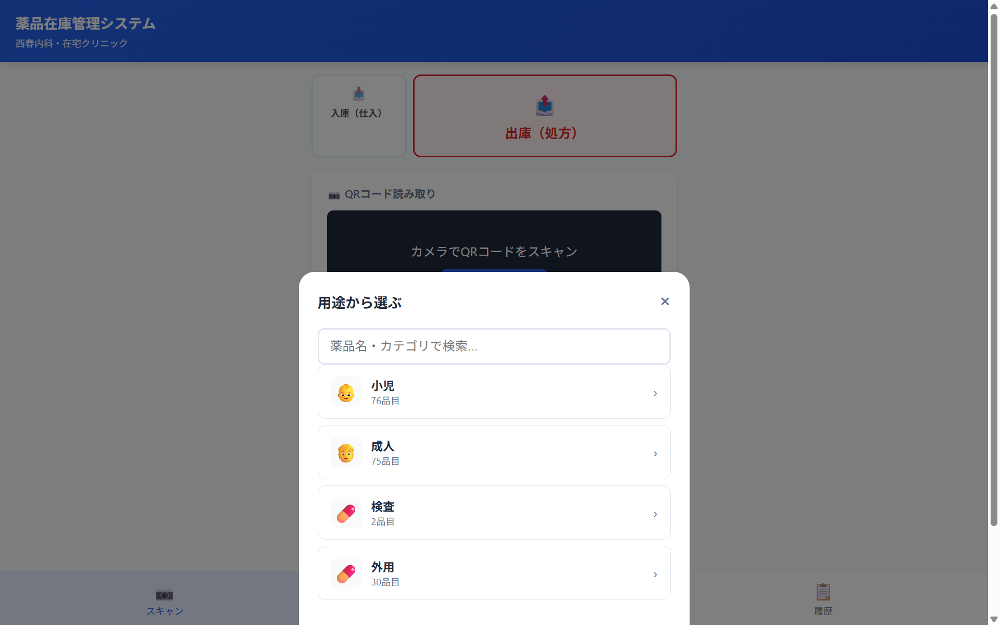
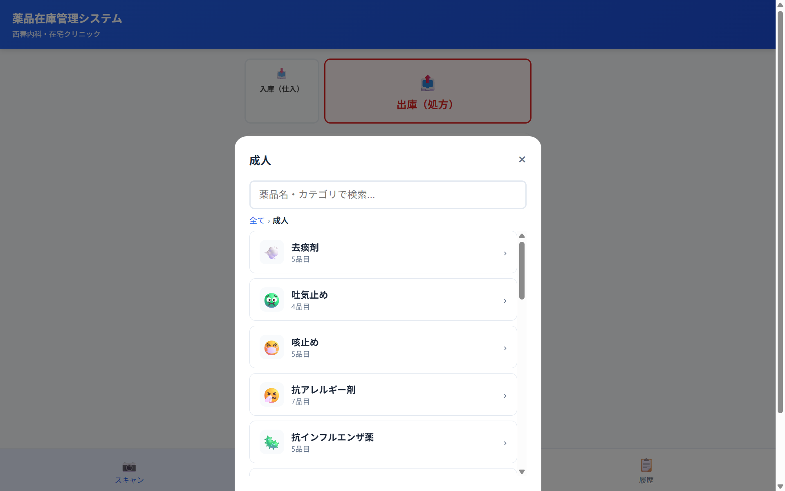
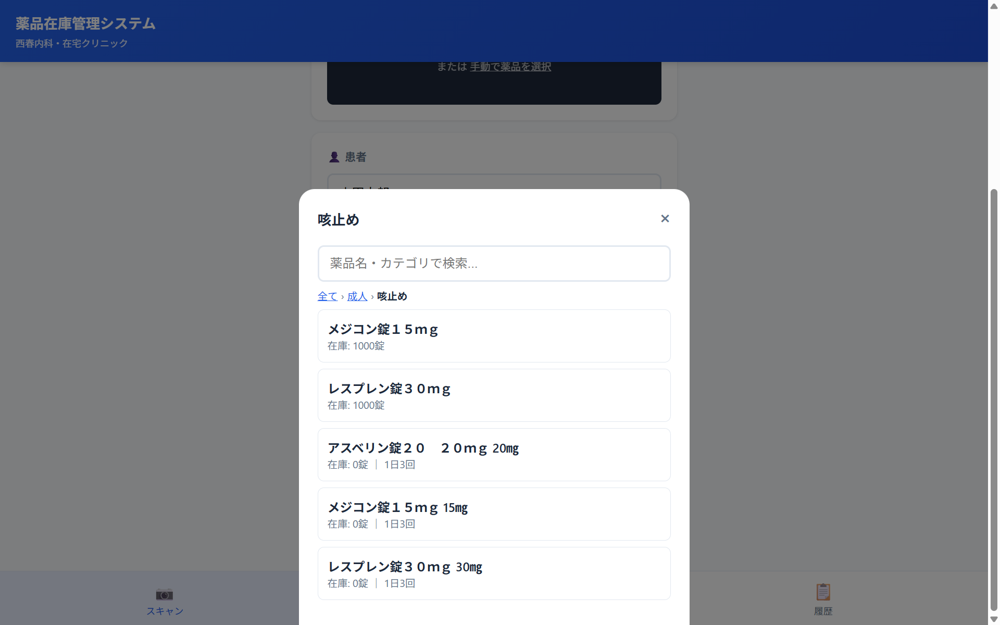
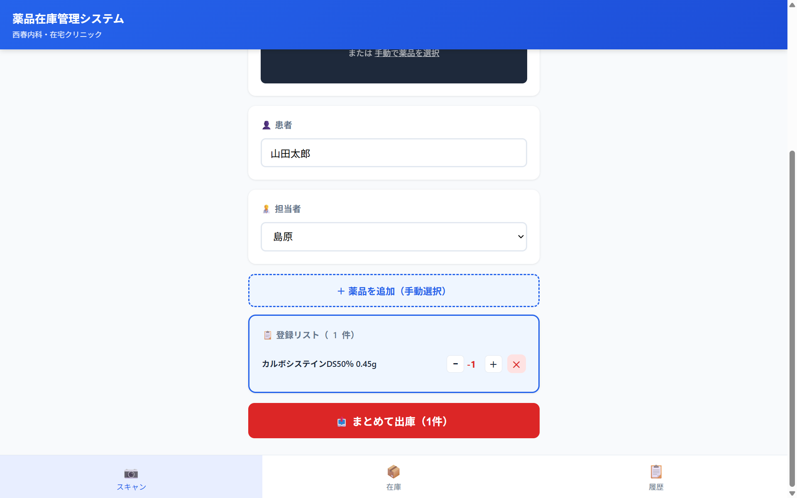
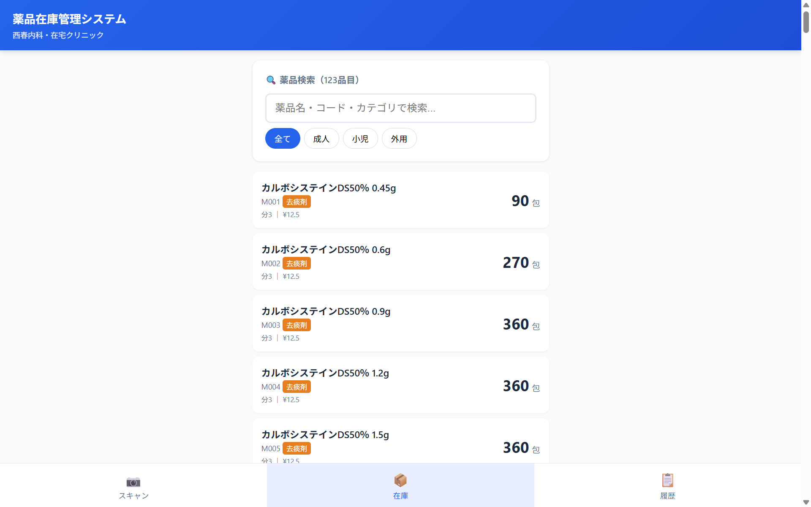
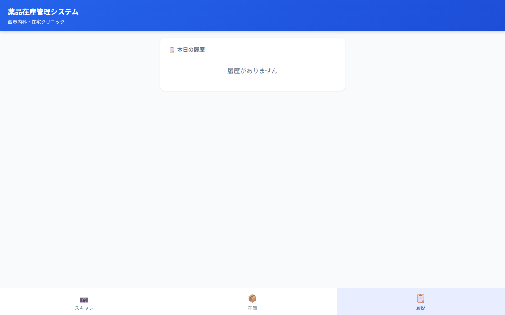

「薬を出した」「薬が届いた」を記録するだけで、在庫の数が自動で減ったり増えたりするシステムです。
画面を見ながら順番にボタンを押すだけで使えます。難しい知識は必要ありません。
パソコンまたはスマホのブラウザ（Chrome / Safari など）で、以下のリンクを開きます。
開くと、こんな画面が出ます。

上から順に並んでいるもの：
下の青い帯には「スキャン / 在庫 / 履歴」の3つのタブがあります。
画面の上にある「出庫（処方）」と書かれた赤いボタンをタップします。
初期状態では、すでに「出庫（処方）」が選ばれていることが多いです（赤い枠で囲まれていればOK）。
下にスクロールすると「患者」欄があります。患者さんの名前または番号をタップして入力してください。
その下の「担当者」欄をタップすると、自分の名前を選べます。

画面の中ほどにある暗い色のボックスの中に、「手動で薬品を選択」という小さな青いリンクがあります。これをタップしてください。
タップすると、画面の真ん中に「用途から選ぶ」というウィンドウが出てきます。

ここでは、患者さんに合わせて「小児（こども）」「成人（おとな）」「検査」「外用（塗り薬・吸入など）」から選びます。
例：大人向けの薬を選ぶときは 「成人」 をタップ。
「成人」を選ぶと、薬の種類別にリストが出てきます。

たとえば：
欲しいカテゴリをタップしてください。ここでは例として 「咳止め」 を選びます。
カテゴリを選ぶと、その中の薬品リストが出ます。

各薬品には、その下に「在庫: ○○錠」と書かれています。
渡したい薬をタップしてください。例：「メジコン錠15mg（在庫1000錠）」
薬品をタップすると、画面下の「登録リスト」に追加されます。

数量の調整方法：
複数の薬を同時に登録したいときは、「+ 薬品を追加（手動選択）」ボタンで何度でも追加できます。
すべて入力できたら、画面下の赤い「まとめて出庫」ボタンをタップ。これで在庫が更新され、履歴に記録されます。
画面の下にある「在庫」タブをタップすると、すべての薬品の在庫数が一覧で見られます。

見方：
上のボックスから検索やカテゴリ切替もできます。
画面下の「履歴」タブをタップすると、本日登録した出庫・入庫がすべて見られます。

今日まだ何も登録していなければ「履歴がありません」と表示されます。
画面下の「在庫」タブを開いて、画面を上から下にスワイプ（引っ張る）してみてください。サーバーの最新数と同期されます。
「履歴」タブから該当の記録を見つけて、削除ボタンで取り消せます（管理者権限が必要な場合があります）。
ブラウザの再読み込み（更新）をしてください。
パソコンの場合は F5 キー、スマホの場合はアドレスバー横の更新マーク。
検索ボックスに、薬品名の一部を入れてみてください。ひらがな・漢字どちらでもOKです。